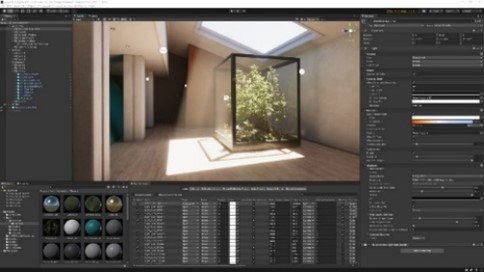
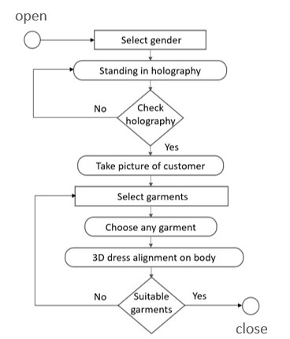
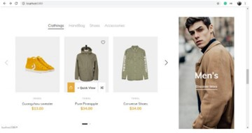
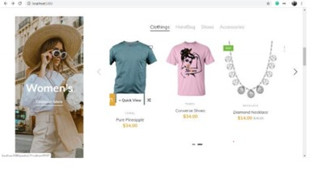

VIRTUAL TRIAL ROOM
1. ABSTRACT
People usually avoid buying wearables like clothes, ornament, etc. online mainly because it's hard to judge whether it will look good on them or not.
To solve this problem, we decided to build a Virtual Trial Room Application. Our approach concentrates on how the selected garment fitted the user’s
body and how it will be appear on user in real world. This was carried out by identifying critical points on garment and user’s body dimensions using
image processing techniques. This application is implemented using augmented reality with the help of Kinect sensor. Augmented Reality is direct and
indirect view of real-world elements that are augmented on computer software. It mainly adds the software information and refines the users view to actual environment.
2. INTRODUCTION
AUGUMENTED REALITY along with KINECT SENSOR. Augmented reality is the technology that expands our physical world, adding layers of digital information onto it.
Augmented reality adds digital element to live view by using cameras or sensors.
Kinect sensor is a line of motion sensing input devices that was produced by Microsoft. Kinect has resolution of up to 1280x1024, monochrome depth sensing video stream is in
VGA resolution with 11-bit depth. This sensor will give video frames as input to system for finding the available dresses in database.
3. LITERATURE REVIEW
1. Md. Farhan hamid, md. Ashraful alam, "virtual wardrobe for physically impaired using microsoft kinect sensor"
This paper throws light particularly on physically impaired people who are partially or completely challenged.
For completely impaired people, sensor senses the head movements for iterating through the clothes and the eyes
movement for selection of apparel.
2. Ari Kusumaningsih; Arik Kurniawati; Cucun Very Angkoso, Eko Mulyanto Yuniarno; Mochammad Hariadi,
"User experience measurement on virtual dressing room of Madura Batik clothes"
The system proposed in paper is used for online trial of Madura Batik clothes which is the regional wear of Indonesia.
It provides virtual reality trial room for foreign customers to change consumer shopping experience and increase buying desire
4. EXISTING SYSTEM
Augmented reality is being used in wide areas mentioned below
- Medical Training
- Design & Modeling
- Business Logistics
- Education
- Gaming
The existing application are implemented using OpenCV and web camera to capture video. Once the video is captured,
it identifies the background and object of human and changes the color of the glasses and adds the selected glasses
according to the users’ choice. This application use OpenCV for identifying the user and to change the color and spectacles
according to user's choice.
It is an platform basically designed for achieving computational efficiency and also to give emphasis for real time applications.
When comes to online Business, most popular eye wear websites lens kart and titan eye+ and other websites are using this technology.
5. PROPOSED SYSTEM
Above are the eye wear websites, but here we are implementing in an E-Commerce websites. E-Commerce websites are having lot of collections to shop.
When we shop online we don’t know whether the dress suits us or not. Customer satisfaction and even this pandemic situation has taken into consideration,
we got an idea to implement virtual trial in the E- commerce sites.
However, the OpenCV technique is not that accurate in virtual dressing.
Here we are going to implement virtual trail room application with a gaming software UNITY 3D and C#. Unity is a cross-platform game engine developed by Unity Technologies,
The engine can be used to create three-dimensional, two-dimensional, virtual reality, and augmented reality games, as well as simulations and other experiences.
The engine has been adopted by industries outside video gaming, such as film, automotive, architecture, engineering and construction. And we need a Vuforia SDK,
this is a software development kit which enables augmented and mixed reality in Unity engine

unity3d
6. APPLICATION APPROCH
The application design approach follows the below steps.
- The user will open the application and selects the gender
- Next there will be a holography which a user should take his/her picture with perfect fit in holograph.
- 3After clicking a perfect picture user will be able choose the garments.
- When the user chooses any garment, the application will show a 3D alignment of the dress on his/her body.
- The user should select number of garments to purchase and later it will direct to buying options.
blockdiagram

Here are the screenshots of the application


7. CONCLUSION
The application is able to track user’s movement and angles with respect to screen to accurately super impose the attire onto the user without having the user to align to the device screen hence improving user experience.
The application can be used by online retailers and vendors to sell their wearable products which will surely attract more customers. The application with the help of the customer (or the person) will carry out the process
of trying the clothing fast and easily, and then selecting the best for him/her, which will, consequently, help us to take advantage of the enormous capacity provided by the science of interaction between man and computer.
This, in turn, will reflect positively on the seller in terms of selling the products in a comfortable, modern way resulting in better sales and on the customer in terms of speed and comfort in scanning through all available
products offered to reach the best decision in choosing clothes.
REFERENCES
[1]. ShreyaKamani, Neel Vasa, KritiSrivastava, "Virtual trial room using augmented reality", International Journal of Advanced Computer Technology (IJACT), Vol. 3/6, Dec. 2014, pp. 98-102
[2]. F. Isikdogan and G. Kara, “A Real Time Virtual Dressing RoomApplication using Kinect”, Cmpe537 Computer Vision Course Project, Bogazici University, January2012
[3]. Cecilia Garcia Martin, ErdalOruklu, "Human Friendly Interface Design for Virtual Fitting Room Applications on Android Based Mobile Devices", Journal of Signal and Information Processing, Vol. 3/4, 2012, pp. 481-490.
[4]. Nikki Singh, SagarMurade, Prem Lone, VikasMulaje"Virtual Trial Room"Vishwakarma Journal of Engineering Research ,Volume 1 Issue4, December 2017
[5]. SaurabhBotre, SushantChaudhari, ShamlaMantri, "Virtual Trial Room", International Journal of Computer Science Trends and Technology (IJCST), Volume 2 Issue 2, Mar-Apr 2014
[6]. Vipin Paul, Sanju Abel J., Sudharsan S., Praveen M"VIRTUAL TRAIL ROOM", South Asian Journal of Engineering and Technology Vol.3, No.5 (2017), pp. 87–96
[7]. Jamal Dargham, Ali Chekima, “Lips Detection in the Normalised RGB Colour Scheme”, Information and Communication Technologies, ICTTA '06. 2nd, Volume: 1, 2006.